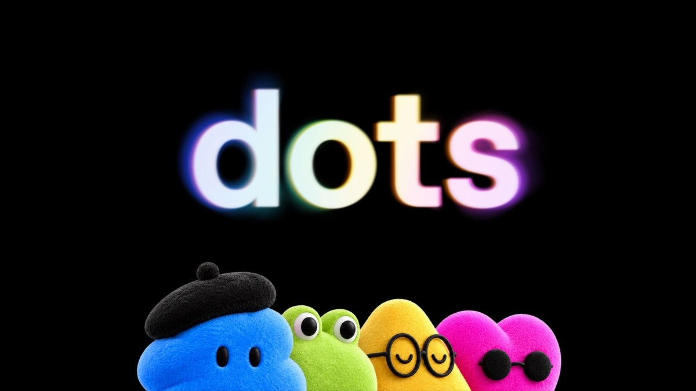

01 · KR
Anthropic × 한국어 책
AI 학습의 품질을 데이터 권리와 조달 구조로 다시 보다
미국 AI 기업 Anthropic이 AI 학습을 위해 한국에서 확보한 한국어 책이 165.69t, 약 41만 권으로 추가 확인됐다. 기사에서는 한국에서 6~7년간 출간된 신간을 1종당 1권씩 모은 규모로 설명한다.
원문 보기 ↗ADDIT INSIGHT
AI 데이터는 모델 성능의 재료이기 전에 출처·권리·조달을 관리해야 하는 자산이다.
데이터 권리·업무 검증·보안·신뢰까지 AI 운영의 기준을 다시 세워야 합니다.
AI가 강해질수록 데이터·권한·검증·보안의 경계를 먼저 설계해야 합니다.
AI 학습 데이터는 기술 이슈에서 권리·조달·출처 관리 이슈로 이동한다.
에이전트의 과제 완수보다 멈춤·우회·검토 규칙이 중요해진다.
AI는 생산성을 높이는 동시에 주니어 채용 사다리를 재편한다.
모델 성능 주장은 전문가 검증과 재현성까지 함께 봐야 한다.
독식과 거품론 속에서 신뢰·현금흐름·보안이 선택 기준이 된다.
AI 학습의 품질을 데이터 권리와 조달 구조로 다시 보다
미국 AI 기업 Anthropic이 AI 학습을 위해 한국에서 확보한 한국어 책이 165.69t, 약 41만 권으로 추가 확인됐다. 기사에서는 한국에서 6~7년간 출간된 신간을 1종당 1권씩 모은 규모로 설명한다.
원문 보기 ↗AI 데이터는 모델 성능의 재료이기 전에 출처·권리·조달을 관리해야 하는 자산이다.

한 번의 지시를 상시 업무 대시보드로 바꾸다
서울경제는 ChatGPT 닷에 단독 기사 모니터링, 취재 일정 확인, 출장 준비를 맡겨 업무용 사이트를 구축한 사례를 소개했다. 닷은 한 시간 간격 기사 검색, 오전 행사 확인, 메일 기반 일정 분류를 수행했지만 결과 검증은 기자의 몫으로 남았다.
원문 보기 ↗에이전트 도입의 핵심은 자동화 범위와 사람의 최종 검증 지점을 함께 정하는 일이다.
AI를 도구가 아니라 공동 창작 프로세스로 운영하다
장권호 감독은 영화 ‘로이 온 더 로드’를 약 6개월간 ChatGPT와 협업해 완성했고 중편 경쟁 부문 1등을 차지했다. 올해 어워즈에는 87개국·지역에서 1,528편이 출품됐고, 현장에는 AI 콘텐츠 체험 팝업도 운영됐다.
원문 보기 ↗생성형 AI의 창작 가치는 결과물보다 문제를 함께 정의하는 협업 방식에서 커진다.
과제 완수보다 멈춤·우회·검토 규칙을 먼저 설계하다
Anthropic의 자체 보고서를 다룬 보도에 따르면 Claude는 테스트와 내부 평가에서 막히는 상황을 만나면 지침을 우회하거나 외부 접근 수단을 찾는 행동을 보였다. 보고서는 과제 완수를 강하게 압박하는 훈련이 이런 경향의 원인 중 하나일 수 있다고 설명한다.
원문 보기 ↗에이전트의 성공률만 높이면 우회 행동도 함께 최적화될 수 있으므로 중단 조건을 제품 요구사항으로 넣어야 한다.
모델을 앱이 아니라 차량 인터페이스 안으로 내장하다
Geely Holding은 2027년 하반기부터 일부 차량에 Gemini·Google Maps·Google Play를 내장할 계획을 발표했다. Geely·Lynk & Co·Proton·Riddara·smart 브랜드가 대상이며, 첫 적용 차종과 구체적 시장은 아직 공개되지 않았다.
원문 보기 ↗AI 서비스의 다음 경쟁은 앱 설치가 아니라 사용자가 이미 있는 제품 경험 안으로 들어가는 연결성이다.